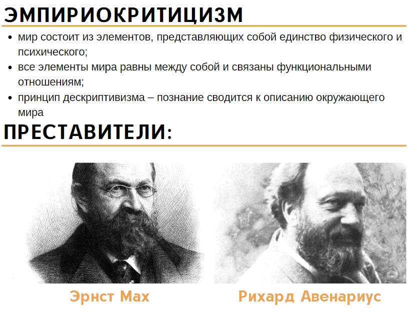
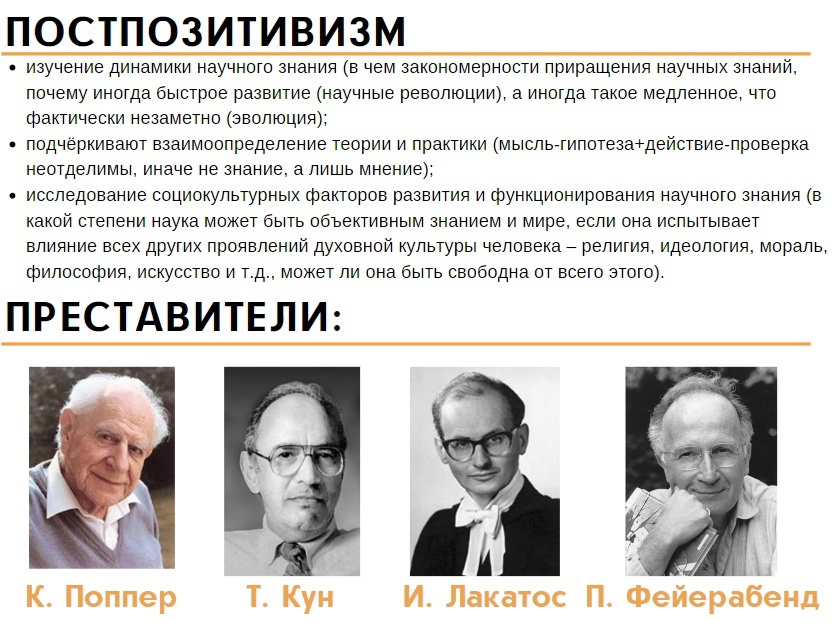

2. Философия Древнего мира: Древняя Индия, Древний Китай, Древняя Греция
- Досократики(ранняя греч. философия)
- Классическая античная философия (5-4 в. д. н.э.)
- Эллинестический римский период (4 .д. н.э.-6 в. н. э)
Школы: Милетская (Анаксимандр ,Фалес), Гераклит Эфесский → диалектики, Элейская школа (Зенон ,Парменид), Атомисты (Демокрит, Левкипп), Пифагорейская школа.
Для этого периода античной философии было характерным стремление понять сущность природы, космоса, мира в целом (космоцентризм), поэтому первых греческих философов называли физиками. В центре внимания досократиков проблемы природы. Философы и первоначала: Фалес–вода, Анаксимен-воздух, Гераклит-огонь, Пифагор-число, Ксенофан- земля, Демокрит-атомы.
Школы: Софисты (Протагор), Сократ, Платон, Аристотель.
Классическая греческая философия переходит от натурфилософских вопросов к проблемам добра и зла, этики поведения человека.
Особое место Сократа в этот период обусловлено тем, что он переориентировал античной философию с проблем физиса на познание самого человека, для которого, по убеждению Сократа, знание самого себя всегда несоизмеримо важнее познания природы.
Для Платона высшими идеями, или эталонами существования общества, являются следующие идеи – истина, благо (добро), прекрасное, справедливость.
Философия для Аристотеля – наука о первоначалах или первопричинах бытия. Таких первопричин он выделяет четыре: материю, форму, действие и цель
Школы: Скептицизм (Пирон,Эмпирик), Сад Эпикура (Эпикур), Стоицизм (Зенон), Неоплатонизм(Плотин).
Особый интерес в эллинистический период вызывал сам человек, субъект.
Эпикурейская школа – ставила вопросы устроения, комфорта личности. В плане познания Эпикур выдвигает ощущение.
Основателем стоицизма пытались обнаружить смысл жизни, отсюда и название лектон (стоики), т. е. смысл. Жизненным идеалом человека должно стать смирение с судьбой, невозмутимое спокойствие, способность не реагировать на внутренние и внешние раздражители.
Основоположником скептицизма выражали сомнения в возможности получения объективных знаний, особенно основанных на чувственных восприятиях. Поэтому они разработали собственное учение о природе и не строили никакой позитивной гносеологии, сосредоточивали свое внимание на критике гносеологических принципов, разрабатываемых другими. Античный скептик отвергал познаваемость жизни и предлагал справляться с трудностями без логико-идейного осмысления.
3. Статус и функции философии в эпоху Средневековья и Возрождения
Средневековая философия представляет собой длительный отрезок в истории европейской философии (I–XV вв.), который непосредственносвязан с христианской религией. В Средневековье философия играла роль служанки религии, так как занималась не свободным поискомистины, а толкованием и обоснованием христианского вероучения. Специфическойчертой средневекового мышления был теоцентризм, согласно которому центром и началом всего существующего, главным объектом познания является Бог (греч. theos – бог). Отправной точкой философских размышлений была Библия, соответствием Библии проверялась и правильность философских идей, поэтому все средневековыемыслители придерживались ряда основных идей, учений.
Креационизм – учение о том, что все существующее сотворено Богом из ничего одной лишь его волей. Бог мыслится как бесконечный, всемогущий, абсолютно нематериальный и вместе с тем являющийся личностью. Бог – не только творец, но и гарант существования мира. Без Бога мир превратился бы в хаос.
Антропоцентризм – учение о человеке как «венце творения», центральном объекте мира, созданном по образу и подобию Божию. Несмотря на свой высокий статус, человек все же получал низкую оценку, считался слабым и греховным существом. Резко противопоставлялись душа и тело. Смысл жизни – в заботе о душе, подготовке ее к жизни вечной. Главная помеха на этом пути – тело и его потребности, с которыми надлежало бороться, ведя аскетический образ жизни.
Провиденциализм – учение о предопределении всего происходящего в мире божественной волей. Бог определяет обстоятельства жизни, оставляя за человеком свободу выбора поступка в данных им условиях. Человек должен мужественно и терпеливо сносить тяготы жизни, твердо веря в божественную мудрость и справедливость.
Эсхатология – учение о будущем человеческого общества. Представления о будущем человечества были пессимистические: будет конец света (Апокалипсис), Страшный Суд над всеми живыми и мертвыми, после которого праведники телесно воскреснут и на земле начнется райская жизнь.
Откровение – учение о том, что человек в особом психическом состоянии выходит на контакт с Богом, и Бог открывает ему такие знания об устройстве мира, судьбах людей, которые невозможно получить обычным путем. Из этого следует, что истинные знания можно получить благодаря вере, а не разуму, вера выше разума. В позднем Средневековье появляется «теория двух истин», примиряющая веру и разум. Согласно ей, вера помогает понять сверхъестественную реальность, сущность Бога, его заповедей, разум же – инструмент познания земного, естественного мира. Вместе вера и разум дают целостное представление о мире. Но приоритет все же принадлежит вере.
Основными этапами развития средневековой философии являются патристикаисхоластика.
Патристика – этап в истории философии, охватывающий период с I по VII в. Для патристики (от лат. patres – отцы) характерны разработка первыми христианскими мыслителями (так называемыми «отцами-основателями церкви» – Августином Блаженным, Василием Великим и др.) христианской догматики и теологических учений. Главные проблемы патристики: сущность Бога и его тройственность, отношение веры и разума, происхождение зла в мире и др.
Крупнейшим представителем патристики был Августин Блаженный. Прогрессивным достижением философии Августина является признание в каждом человеке уникальной личности с ее моралью, ценностями, ответственностью перед людьми и Богом за свои поступки. В сочинении «О граде Божьем» Августин Блаженный развил христианскую концепцию всемирной истории, понимаемой как результат божественного предопределения. Мир разделен на два града: град земной, т. е. светский мир, и град Божий, который представлен на земле христианской церковью. Церковь – единственное, что способно помочь людям победить грех и объединить мир.
- В мире все имеет свою причину, следовательно, существует и первопричина – Бог.
- Все в мире движется, из чего можно заключить, что существует перводвигатель – Бог
- Все конечные вещи случайны (их могло не быть), следовательно, должно быть нечто необходимое – Бог.
- Все, что существует, имеет различные степени качества, следовательно, должно быть высшее качество – Бог.
- Все в мире целесообразно устроено, поэтому должен существовать и сам разумный устроитель – Бог.
Для средневековой философии в Европе очень важной была полемика между реализмом и номинализмом по вопросу о природе общих понятий (универсалий). Под реализмом подразумевалось учение, согласно которому подлинной реальностью обладают не только единичные предметы, но и общие понятия. Общие понятия (универсалии) существуют реально. Отсюда и термин «реализм». Причем, общеекак нечто идеальное предшествует вещи (Альберт Великий, Фома Аквинский). Согласно же взглядам номиналистов, общие понятия – только имена; они не обладают никаким самостоятельным существованием вне и помимо единичных вещей. Общие понятия (универсалии) – это звуки голоса (номинал). Отсюда название «номинализм» (П. Абеляр, У. Оккам и др.)
Несмотря на сильное влияние церкви, период Средневековья нельзя считать периодом застоя философской мысли. Он стал связующим звеном между античной философией, философией эпохи Возрождения и Нового времени.
4. Философия Нового времени и эпохи Просвещения
Средневековому созерцательному идеалу знания все чаще противопоставлялось естественнонаучное познание природы, дающее обоснованное и полезное знание. Основу развития научного знания составляли, прежде всего, открытия в физике (классическая механика, закон всемирного тяготения, теория движения небесных тел, важнейшие принципы оптики, вклад в математику (дифференциальное и интегральное исчисление) И. Ньютона, основной закон электростатики Ш. Кулона и др.), математике (аналитическая геометрия, переработка математической символики Р. Декартом, комбинаторика, математическая логика, двоичная система счисления Г. лейбница и др.) и естествознании (астрономия – открытие Ф. Гершелем планеты Уран, дальнейшее развитие представлений о Солнечной системе, биология – основы анатомии А. Везалия, большой круг кровообращения У. Гарвея, открытие микробов А. Левенгуком, классификация растений К. Линнеем и др.). Главный метод исследований – эксперимент, на него теперь опирается наука, которая начинает вырабатывать знания и технологии, востребованные промышленным производством. XVII в. – это появление плеяды выдающихся ученых-мыслителей, создателей оригинальных, самобытных и целостных философских систем: Фрэнсис Бэкон, Рене Декарт (Картезий), Томас Гоббс, Джон Локк ,Готфрид Лейбниц и др. Образ философской мысли этого времени можно очертить следующими общими чертами: основной исследовательский интерес направлен на философское обоснование научного познания природы и поиск эффективного научного метода, что можно назвать и определить как эпистемоцентризм (греч. episteme – знание), имея в виду, конечно, первенство знания научного. Отказ от предыдущего античного рационализма и средневековой схоластики основывался отныне на успехах научного (математического и естественнонаучного, в первую очередь) знания. И хотя понятие Бога еще присутствовало в сознании передовых мыслителей, тем не менее, уже не оно определяло новое понимание предмета философии (как это было в Средние века). Предметом философского познания теперь стала природа. Целью познания – систематизированное знание о природе, а практической задачей – новые открытия, приносящие практическую пользу и способствующие воплощению «царства человека» в мире, как наиболее высокоразвитого из всех природных объектов разумного существа. Поскольку Новое время интересовало прежде всего научное познание, то важным вопросом стала природа и закономерности человеческого познания как такового. Здесь обозначились три главных стратегии исследований: эмпиризм (Ф. Бэкон – опыт есть основа познания), сенсуализм (Дж. Локк – ощущения есть основа познания), рационализм (Р. Декарт – разум есть основа познания).
Социально-исторические и мировоззренческие основания философской мысли эпохи Просвещения. Философия Просвещения, которая является частью периода Нового времени, связана с утверждением в Европе буржуазных отношений. Крупнейшие философы этой эпохи – Вальтер, Руссо, Гольбах, Дидро, Гельвеций. Общая идея эпохи – утверждение принципов демократии и расширение всеобщего образования. Для просветителей был характерен мировоззренческий материализм (идея всесильного разума), социальный оптимизм (идея общественного прогресса). Принято выделять различные национальные течения-школы внутри Просвещения (французское. английское, немецкое и др.) Французское просвещение характеризуется политическим радикализмом (стремление к полному политическому переустройству общества от абсолютной монархии к республике), антиклерикализмом (борьба с церковью). Французские просветители своими идеями подготовили французскую буржуазную революцию 18 века. Французские материалисты продолжали линию, заложенную во Франции Декартом (природа – стройная механическая система, человеческое тело – сложная машина). В природе имеет место непрерывный круговорот вещества, движения и силы. Для французских материалистов природа, вселенная и материя – синонимы. Эти материалисты – представители т.н. воинствующего атеизма, для которого характерно непримиримое отношение к любым религиозным верованиям. Человек рассматривался как неотъемлемая частица природы. Основатель такого типа материализма – французский врач и философ-материалист Жюльен Офре де Ламеттри. Основные сочинения Ламетри – «Человек – машина». Разум – способность комбинировать, упорядочивать ощущения. Познание – это пассивное копирование реальности с помощью органов чувств. Материализм во Франции был механистическим (т.е. законы механики – абсолютные законы которым всё подчиняется). При наличии явных материалистических представлений в своих учениях об обществе французские материалисты «скатывались» на позицию идеализма – разумная организация жизни возможна на основе внесения в общество законов и развития человеческого духа, сознания. Вырабатывается ими также идея общественного прогресса (неуклонного развития человеческого разума в процессе истории). Представители английского просвещения (хронологические предшествует французскому) – Локк, Беркли, Юм, Смит, которые разрабатывали как проблемы теории познания (гносеологии), так и политической философии и экономики. Крупнейшие представители немецкого просвещения – Шиллер, Лессинг, Гёте, Гердер и др.
Стоит отметить, что для некоторых просветителей был характерен и деизм. Деизм – признание в качестве первопричины бога, который сотворил мир, однако далее тот развивается по собственным, заложенным заранее законам. Знаменитым в этой связи является изречение Вольтера: «Если бы Бога не было, его следовало бы выдумать». Тем самым он подчеркивал важность духовной основы и моральных принципов в жизни общества, которые не могут быть обоснованы исходя из крайних материалистических идей, получивших стремительную популярность в то время.
5. Немецкая классическая философия: Кант, Гегель, Фейербах
Основоположник немецкой классической философии – Иммануил Кант. Последующие представители – Фихте, Шеллинг, Гегель, Фейербах. Основная проблема – проблема познавательной активности субъекта, т.е. проблема человеческого разума и познания. Великим достижением немецкой классической философии явилось раскрытие творческой, активной природы субъекта и его сознания в познавательном процессе, разработка нового понимания диалектики, а также диалектического метода познания действительности и её дальнейшего преобразования (преобразования действительности, т.е окружающего мира) в различные виды человеческой культуры. Т.е. человек познает мир, преобразовывает его и далее он (т.е. преобразованный мир) уже становится частью его (т.е. человека) культуры.
Главные произведения Канта: «Критика чистого разума» (предмет исследования – наука), «Критика практического разума» (этика), «Критика способности суждения» (эстетика и телеология). Чем Кант знаменит? Он разработал теорию происхождения мира из газо-пылевой туманности, интенсивно в молодые годы занимался астрономией, внёс вклад в понимание роли вращения земли вокруг своей оси, в понимание влияния луны на приливы.
Далее Кант сменил сферу своих интересов на философские. Он занялся вопросами человеческого познания (деятельности субъекта познания, т.е. что именно человек проделывает в своей голове, когда познает что-то). Он считал, что объективный мир, данный нам в чувственном восприятии, - это мир т.н. «вещей-в-себе», т. е. этот мир существует сам по себе, независимо от человека и он открывает нам лишь те или иные свои проявления (феномены), в то время как его подлинная сущность (т.н. ноумен, т.е. «вещь в себе») остается для нас до конца никогда неизвестна. Данное предположение вполне обосновано, т.к. несмотря на все стремления человека к познанию мира, он окончательно и полностью не ответил ни на один вопрос в науке, с которым бы ни работал, т.е. все его ответы в науке имеют лишь относительный характер и, по сути, только расширяют грани неизвестного.
Таким образом, возникает агностицизм (важная особенность кантовской Ф.) как учение о принципиальной непознаваемости вещей в себе. Априоризм (вторая особенность кантовской Ф.) – мир явлений познаётся на основе наличия в сознании врождённых познавательных форм, не связанных зачастую с опытом (психологические идеи (душа, личное бессмертие), космологические идеи (мир как целое, свобода (хаос) как то, что предшествует причинности, господствующей в мире явлений), теологические идеи (Бог) и др.)
- Чувственное созерцание. На уровне этого восприятия существуют кроме иных проявлений чувств пространство и время. Пространство – форма внешнего восприятия, время – форма внутреннего восприятия субъектом мира.
- Рассудок – подведение чувственного восприятия под единство понятий языка. На уровне рассудка встречаются категории (слова, выражающие смыслы) – априорные формы рассудочной деятельности.
- Разум – способность максимально возможного синтеза, обобщения того, что получено на уровне рассудочной деятельности.
Благодаря наличию категорий обеспечиваются объективная всеобщность смыслов и информации, которую человек знает о мире.
Кант выделил несколько основных категорий: Количество (единое множество) Качество (реальность, ограничения) Отношение - Модальность (возможность и не возможность, необходимость и случайность, существование и не существование). В предыдущие времена разработкой различных категорий, с помощью которых человек познает мир занимался еще Аристотель (десять категорий: субстанция (сущность), количество, качество, отношение, пространство, время, состояние, обладание, действие, претерпевание)
И. Кант сформулировал концепцию чистого разума, как способность человека производить идеи – идеалы, принципы, ценности, т.е. смыслы высшего порядка, которые выходят за рамки обычного человеческого опыта и подводят итог под всеми предыдущим его знаниями.
Антиномии (противоречия) чистого разума: они возникают, когда разум выходит за пределы своей компетенции и опыта. Кант говорил: «мир как полное целое не может быть дан в человеческом опыте». Но человек всегда мысленно стремится именно выйти за рамки своего опыта, помыслить то, чего в его опыте не было. Кант выделяет четыре антиномии (противоречия) чистого разума, которые согласно представлений человека о мире выглядят одинаково обоснованно: «1) мир имеет начало во времени и заключен в пространственные границы – мир не имеет ни начала, ни границ в пространстве, но бесконечен как во времени, так и в пространстве; 2) всякая сложная субстанция в мире состоит из простых частей, и вообще существует только простое или то, что сложено из него, – ни одна сложная вещь в мире не состоит из простых частей, и вообще в нем не существует ничего простого; 3) причинность по законам природы не есть единственная причинность, из которой могут быть выведены явления мира в целом. Для их объяснения необходимо признать еще и свободную причинность – нет никакой свободы, но все в мире происходит исключительно по законам природы; 4) в мире есть нечто, что либо как часть мира, либо как его причина есть безусловно необходимая сущность – не существует вообще никакой безусловно необходимой сущности, ни в мире, ни вне мира в качестве его причины».
В свою очередь явления или говоря иначе феномены в отличие от «вещей-в-себе» – это продукт деятельности самого сознания человека, в этом Кант – субъективный идеалист.
Человека Кант считает жителем 2-ух миров: 1.чувственного м. (здесь чел. не свободен, т.к. подчиняется законам природы, которые предопределили законы функционирования его чувств) 2.мира разума (здесь чел. свободен, но подчиняется высшим идеалам и ценностям, нравственному закону, которые имеют неприродное происхождение – т.н. категорическому императиву – «Поступай так, чтобы максима твоей воли могла стать законом для всеобщего поведения»).
6. Материалистическое понимание истории в философии К. Маркса
- Они изменили предмет философии. Считали, что философия должна не просто изучать (объяснять) чела и общество, но служить изменению чела и общ-ва.
- Маркс создал диалектический материализм. Он применил диалектич. методы для объяснения развития природы. Маркс высказал мнение, что противоречие – это источник развития не только природы, но и общества и человека.
- Они (Маркс и Энгельс) разработали теорию познания как активное целенаправленное отражение действительности (до Маркса познание рассматривалось скорее как созерцательный процесс, направленный на понимание окружающего мира). Маркс же склонялся к тому, что надо еще и действовать.
Таким образом, философия в марксизме – это не как объясняющая теория, а как практическое средство изменения мира. Маркс обратился к низам общ-ва, кот. должны освободить себя и весь мир от частной собственности, которая служит порабощению одних людей другими. Центральной идеей марксизма явл. материалистическое понимание истории: люди сами творят историю, но при обстоятельствах, от них не зависящих, люди – это актеры (исполнители) и при этом авторы собственной драмы. Не сознание людей определяет их бытие, а бытие определяет их сознание (к каким условиям жизни привык, такой и стиль мышления). Развитие общ-ва есть естественный исторический процесс освобождения человека от различных форм насилия одних людей над другими.
Марксизм по своей сути материалистичен (иначе его называют еще «диалектический материализм» или «исторический материализм») не отрицает роль идей, роль духовного. Т.к. базис общества – экономика, производство материальных благ, над которым существует «надстройка» в виде системы отношений, ценностей, норм культуры, управления (конкретное выражение всего этого – государство, его идеология, культура общества), что есть уже проявления чисто духовные. В этом смысле способ производства, по мнению Маркса, очень сильно определяет мировоззрение людей, т.е. их духовный мир (бытие определяет сознание).
Маркс знаменит тем, что сформулировал краеугольные положения учения о коммунизме. Коммунизм, по его мнению, кладет конец предыдущей предыстории человечества и открывает его подлинную историю, которая свободна от антагонизмов (противоречий, неразрешимых внутри существовавших ранее типов общественных строев) м/у людьми, а также между ними и природой. По замыслу философа, коммунизм, должен уничтожить отчуждение человека от общества. Т.е. должны были быть реализованы самые благие цели. Однако абсолютизация марксистской теории привела в 20в. к проявлению элементов тоталитарного об-ва. Это нельзя ставить в вину Марксу, т.к. он был философом, а не революционером или политиком. Маркс различал соц.-фил. и соц.-полит. стороны своего учения. Соц.-полит. теория, писал М, будет зависеть от характера эволюции европейского капитализма. Соц.-фил. от исторических процессов. По мнению Маркса, в конечном итоге человеческое существо (человек) свободно, т.е. само себя формирует и создает.
В познании для Маркса самое главное это практика, т.к. она есть главный критерий истины (что реализовано, подтверждено на практике, то истинно).
7. Становление неклассической европейской философии XIX в. Философия иррационализма (А. Шопенгауэр, С. Кьеркегор, Ф. Ницше) и проблемы человеческого существования в экзистенциализме
Постклассическая (еще называют неклассическая) философия возникла в результате критического преодоления идейного наследия философии Нового времени в том виде, как она была представлена, прежде всего, в немецкой классической философии.
Постклассическая философия не была однородной и в лице ее основных родоначальников различным образом отреагировала на новые условия жизнедеятельности человечества. Суть перехода от классической философии к неклассической в переходе от рационализма к иррационализму. Это было связано с интересов к новым сторонам жизни человека, ранее не рассматривавшихся классической философией (ранее интерес философов был сосредоточен главным образом лишь на разумной стороне жизни человека, несмотря на то, что человек не всегда поступает разумно, даже если знает что нужно делать, знать и делать, таким образом, не всегда одно и тоже, чаще наоборот).
Артур Шопенгауэр (течение – философия жизни). В начале XIX в. впервые выразил идеи иррационализма. Он считал себя подлинным наследником кантовской Ф. и считал учение Гегеля бредом. «Мир как воля и представление» – это основное сочинение Шопенгауэра, которое легко читается и переиздается по сей день. Суть его Ф. в названии данного сочинения. Он считал, что Кант ошибался, когда утверждал, что вещи в себе не познаваемы. Шопенгауэр считал, что нужно просто заглянуть в себя, там есть ответы на все вопросы. Подлинную сущность человека составляет не разум, а воля (космическое начало), воля сильнее разума. Разум, по Шопенгауэру, не является инструментом познания, это орган выживания существа в изменчивом мире. Шопенгауэр обращается к наследию индийской Ф. (буддизм). Древне буддийские трактаты он называет источником своего философского вдохновения. Из буддийской доктрины он заимствовал концепции описания мира. Основываясь на буддийской философии, Шопенгауэр утверждал, что страдание – это существенная часть всей жизни. И даже такое понятие как «счастье», в философии Шопенгауэра несет в себе природу страдания, поскольку неосуществленное желание приносит боль, а осуществленное – пресыщение, а со временем и отвращение.

Шопенгауэр – основоположник направления «философия жизни», продолжателями которой был Ницше.
Датский мыслитель Сёрен Кьеркегор (1813-1855) поднял бунт против гегелевского объективистского рационализма, безличного и всепроникающего мирового разума, которым якобы пронизан мир, представленный в гегелевской философской системе, из поля зрения которой выпадает, по Кьеркегору, главный предмет – индивидуальное человеческое существование, т.е. человек с его главными мыслями и переживаниями (о том, по сути, зачем он живет, стареет, расходует силы, постоянно борется с чем-то и что он в итоге должен сделать благодаря всему этому). Поэтому для Кьеркегора исполненный самолюбования Гегель и его Ф. это «ворона и сыр, выпавший изо рта в момент приступа красноречия». Кьеркегор убежден, что возможна лишь субъективная, «качественная» т.е. настоящая диалектика человеческого существования, включающая три стадии роста личности: эстетическая, этическая, религиозная. В соответствии с этими стадиями Серен Кьеркегор делит людей на четыре типа: обыватель (Spidsborgeren), эстетик (Estetikeren), этик (Etikeren), религиозный человек. Обыватель (обычный массовый человек) живет так, как окружающие: старается работать, создать семью, хорошо одеваться и говорить хорошо. Он следует стадному инстинкту. Он течет по течению и смиряется с обстоятельствами, не думая о том, что он может что-то изменить в своей жизни. Он просто не знает, что у него есть выбор.
Эстетик (оригинал, стиляга, модник, индивидуалист, эгоист) знает, что он у него есть выбор. Он знает, что ему не нужно следовать за всеми. Он выбирает сам свой путь. Он выбирает жизнь, которая полна удовольствий. Ему нравится хорошая еда, стакан вина, красивые женщины. Он не думает о чувстве долга и ответственности, и вовсе не думает, что такое хорошо и что такое плохо. Он просто живет сегодняшним днем и наслаждается жизнью. Если нет ничего интересного, то ему становится скучно. Он чувствует, что его жизнь пуста.
Тогда человек может перейти через переживание отчаянья на этическую стадию, когда его поступками руководит разум и чувство долга. Этик (патриот, гражданин, лидер, сознательный и ответственный человек) не чувствует, что его жизнь пуста. У него развито чувство долга и ответственности. Он разбирается, где добро и где зло, что такое хорошо и что такое плохо. Он считает, что нужно жить с женщиной, любить ее и быть ей верным. Ему хочется совершать только хорошие поступки и не совершать ничего плохого. На этической стадии эстетическая не исчезает бесследно, а происходит постоянно колебание между эстетическим и этическим.
В конце концов человек может прийти к осознанию ограниченности как эстетического, так и этического образа жизни, испытав отчаянье. Тогда дискретно может произойти прорыв на духовную стадию, где человеком руководит сердце, вера, которая не подвластна ни чувственности, ни разуму. Религиозный человек понимает, что он не совершенен. Он знает, что он грешен и нуждается в Боге. Он верит всем сердцем, что Бог его простит. Бог - совершенен, человек - нет.
Отталкиваясь от вышесказанного, Кьеркегор определяет человеческую жизнь как борьбу с отчаянием (одно из центральных понятий философии Кьеркегора) в связи с неочевидной ясностью происходящего с человеком. Один из оригинальнейших мыслителей ХІХ века немецкий философ Фридрих Ницше принадлежал к направлению, получившему название «Философия жизни». Центральное понятие этого направления – «жизнь» как поток бесконечного, изменчивого неуловимого рациональными методами познания и в то же время творческого и созидательного для каждого человека существования – противопоставляется традиционному для западной философии понятию бытия как чему-то неизменному, основополагающему, умопостигаемому. Т.е. человек счастлив тогда, когда чувствует что-то хорошее и позитивное для него, когда он творит, а не когда он размышляет о чем-то, рационально и точно воспринимает какие-то вещи, события, процессы. Опираясь на указанный подход, философии Ницше попытался очертить новую модель взаимоотношения человека и мира, где бы предпочтение отдавалось не миру, а самому человеку.
Ницше рассматривает жизнь сквозь призму биологии. Он считает, что сущность реальности выражает не воля к жизни, а точнее воля к власти (под властью же понимается жизнь – условия естественного отбора, доминирование, подчинение воли других своей воле). Он враг всего, что сковывает жизнь. По его мнению, это, прежде всего, мораль и христианство.
По Ницше нормальное состояние общества – это господство сильного. А мораль и христианство культивируют слабые стороны человека. Идеал Ницше – сверхчеловек, у которого воля к власти активизирована. Неудивительно, что идеи Ницше были востребованы Гитлером и национал-социалистами (фашистами) в период развития Третьего рейха. После Второй мировой войны исследователи долго реабилитировали Ницше от штампа «фашистского мыслителя», говоря о том, что его идеи не были прочитаны до конца. Речь на самом деле шла о том, чтобы человека стал сверхчеловеком, совершив «переоценку ценностей» (одно из центральных понятий философии Ницше), выбрав, наконец, по какую он сторону добра и зла и следовал бы честно и открыто своим идеям, став хозяином своего слова и дела. Это не просто, но по знаменитому выражению Ницше – «Что нас не убивает, делает нас сильнее», человек обретает силу, только совершенствуя себя. Ницше критиковал современное ему буржуазное общество ХIХ в., считая, что вместе с ними в будущем (прогнозы фактически сбылись) придет общество с засильем низкосортной массовой культуры, делающей человека несамостоятельным, недалеким, глупым, бездумным потребителем, когда ценности культуры будут поставлены «на конвейер» по принципу фабричного производства, что истребит элитарную культуру, доминировавшую в прошлом с ее высокими стандартами и вкусами. недоступными всем слоям общества.
Работы вышеназванных авторов подготовили почву для появления такого направления философии как экзистенциализм – направление философии, главным предметом изучения которого стал человек, его проблемы, трудности, существование в окружающем мире. Экзистенциализм начал зарождаться еще в середине XIX века, а в 20-е – 70-е годы XX века (особенно после трагических событий Второй мировой войны, показавших реальный пессимизм и трагедию человеческого существования) приобрел актуальность и стал одним из популярных философских направлений в Западной Европе.
- уникальность человеческой личности, глубина его чувств, переживаний, тревог, надежд, жизни в целом;
- разительное противоречие между человеческим внутренним миром и окружающей жизнью;
- проблема отчуждения человека (общество, государство стали для человека абсолютно чужими, реальностью, которая полностью пренебрегает человеком, подавляет его «Я»);
- проблема бессмысленности жизни, одиночества, заброшенности (человек одинок в окружающем мире, у него нет «системы координат», где он чувствовал бы себя нужным);
- проблема внутреннего выбора и проблема поиска человеком своего как внутреннего «Я», так и внешнего — места в жизни.
8. Позитивизм XIX–XX вв. о предмете и задачах философии: этапы развития и эволюция идей
Основоположник позитивизма – французский философ Огюст Конт (1798–1857). Позитивизм – философское течение, утверждающее, что позитивное (положительное, устойчивое, несомненное) знание может быть получено как результат сугубо научного (а не, как это было ранее, религиозного или абстрактного философского) познания и далее должно быть подвергнуто процедуре проверки посредством опыта. Он также является основоположником социологии, как новой и точной науки об обществе и общественных процессах.
Современное Конту образованное человечество 19 в. находилось, на его взгляд, в критическом состоянии умственной анархии и дезорганизации. Почему? Потому что применяемые ранее теологические (религиозные, начиная с древности) и метафизические (философские, абстрактные, отвлеченные от реальности) попытки духовного объединения знаний о мире потерпели бесповоротное крушение. Из такого бедственного состояния человечество на тот момент, как он полагал (речь, повторимся, о 19 веке) не могло быть выведено отдельными науками, которые уже начали интенсивно развиваться. Проблема в том, что каждая из наук, имея свой специальный предмет, не может видеть общее, т.е. мир в его целостности. Науки разбивают мир на сегменты, части и поэтому часто специалисты разных наук как будто живут в разных профессиональных мирах. Это значит, что никакая наука (даже IT в наше времяJ) сама по себе не может решить общую задачу духовной реорганизации общества для его дальнейшего устойчивого развития. Иными словами, каждая наука уходит в своем направлении далеко и соединить их бывает не просто. Разрешить проблему интеграции, объединения знаний с успехом могла бы только такая система взглядов, которая с всеохватным характером прежних подходов (теология и метафизика. А другого в истории человечества просто не было!) добавляла бы к этому еще и достоверность точной науки, как это и было достигнуто к 19 в. Такая система взглядов и есть, по Конту, т.н. положительная философия (позитивизм), то есть основанная не на фантазии и отвлеченном мышлении (как теология и метафизика), а на бесспорном фактическом материале наук, как последнее обобщение их данных. Т.е. получается, что каждая наука в своей частной области объясняет большое множество наблюдаемых фактов, сводя их к законам и связям явлений. Философия же должна установить связь между предметами отдельных наук и, следовательно, между самими науками. Поэтому философия не имеет своего особенного содержания, она только приводит в общий систематический порядок содержание всех наук и тем самым она сама становится максимально точной (позитивной).
- Классический позитивизм, возник в 1-ой пол. XIX в. в период формирования дисциплинарной науки, его представляют О. Конт, Дж. Милль и Г. Спенсер.
- Эмпириокритицизм (от греч. «ἐμπειρία» – опыт и критика) – возникает в кон. XIX – нач. XX вв. Его представители - Р. Авенариус и Э. Мах. Они развивали позитивизм дальше и полагали, что задача «позитивной» философии сводится к тому, чтобы заниматься «очищением опыта» (отсюда название течения: «эмпирио» - с греч. опыт + «критика» - очищение, пересмотр, ревизия, проверка) и тем самым посредством выявления и нейтрализации истоков «метафизики» (обобщенных и абстрактных, не связанных с опытом понятий) избавить от нее научное мышление. Если не проводить «критику опыта», не осуществлять ревизию всего состава знаний к его изначальным элементам, т.е. научным фактам, то возникает угроза «метафизики» (пустой спекулятивной философии, запутывающей мышление). Вместо «бесконечных и бессмысленных» метафизических споров эмпириокритицизм предлагает исследовать процесс конструирования опыта (а он в большинстве случаев складывается прежде всего из «комплексов ощущений» - зрение, слух, осязание – мы чувствуем все вместе и сразу) и образования знаний (они закрепляющихся прежде всего в научных понятиях, которые мы используем, т.е. в научных терминах, словах). 
- Неопозитивизм формируется в 20-х гг. XX в. и представлен двумя вариантами: лингвистическим позитивизмом ( Л. Витгенштейн, Дж. Мур и др. ) – исключить не имеющие смысла положения из науки, возникающие вследствие неправильного употребления языка (фильтровать язык = фильтровать знание и мышление) и логическим позитивизмом ( М. Шлик, Р. Карнап и др. ) – надо создать идеальное логическое средство осмысленных рассуждений. Для этого предложили отделить научные положения имеющие смысл, от положений не имеющих смысл. Для чего используетсяся принцип верификации – только те положения (предложения) имеют смысл, которые допускают опытную проверку.
- Постпозитивизм (то, что «после позитивизма») формируется в 60-70 гг. XX в. и переключается на исследование реальной истории науки. Его основоположники - К. Поппер, Т. Кун , И. Лакатос, П. Фейерабенд и др. 
Что еще важно, что О. Конт свою позитивную философию (позитивизм) вводит на основе открытого им т.н. закона 3-х стадий интеллектуального развития человечества: религиозной (всё объясняется с помощью богов), метафизической (при помощи абстрактных философских понятий, таких как сущность, причина и т.п.) и позитивной (сугубо научной), которая начинается с описания реальных фактов и отвечает на вопрос «как?», а не «почему?», т.к. на последний ответить точно практически невозможно. Поэтому идеалом познания Контом признается описательная модель научного знания с опорой только на факты. Вывод: позитивизм предлагал ограничиться миром вещей, а мир идей оставить в покое.
9. 9. Русская философия XIX– нач. XX вв. Славянофилы и западники.
Развитие Ф. в России по сути началось с принятием христианства в Х в., с распространением культурных и научных достижений других стран в более поздние периоды (особенно начиная с эпохи Петра I – это начало Нового времени). В 19 веке русская философия достигла своего качественного развития. В 19 веке на первое место выдвигаются социально-политические проблемы (вопрос выбора вектора, пути развития России). Проявляется борьба между западниками и славянофилами. Представители западничества: Радищев, Писарев, Добролюбов, Белинский, Герцен. Представители славянофильства: братья Киреевские, Хомяков, Аксаков, Данилевский, Леонтьев.
Западники (смотрели на Запад как на образец) считали, что история России – тупиковая линия, т.к. Россия пошла за Византией (т.е по негативному пути развития). Славянофилы, напротив, считали, что лучшее в России – это все итог принятия православия. Славянофилы отвергали западный эгоизм и индивидуализм. Они продвигали идею соборности: соборность – термин, обозначающий начало жизни людей общества (следует понимать как разумность, совестливость, искренность, единение людей как в церковной жизни, так и в мирской, общение в братстве и любви, умение договариваться, помогать и т.д.), противопоставляемое индивидуализму и эгоизму не ущемляющее личностное начало каждого человека. Поэтому славянофилы выдвинули идею реформирования государственного устройства в направлении соблюдения принципов соборности. Мол, Россия выработала свой уникальный, самобытный путь своего развития и не должна с этого пути сворачивать. В 20 веке западничество представлено Н.Бердяевым, а славянофильство – Ильином и Солоневичем. В 20 веке в России был популярен т.н. естественнонаучный материализм (Сеченов, Павлов, Бехтерев), как исследования области биологии и нейрофизиологии и их философское осмысление. В русской Ф. в целом обозначились материалистическое и идеалистическое направление. Материалисты: Добролюбов, Герцен. Во второй половине 19 века в Россию проник марксизм, который вскоре стал доминантным философским течением на долгие годы, соединившись с ленинизмом (философские и революционные взгляды Ленина) = марксизм-ленинизм. Марксизм (кто не помнит) относится также к материализму. Однако идеализм также занимал свою нишу (представители – Соловьев, Федоров, Бердяев, Флоренский, Л.Шестов, С.Булгаков). Развивалась также идея космизма (Соловьев): идея всеединства (необходимость единства в жизни человека таких глобальных ценностей как истина+добро+красота), идея целостного человека, в котором наряду с рациональным началом (техническая мысль) присутствует духовное начало (вера, нравственность), также идея о том, что космос, как творение божье (кому не понятно слово божье, следует заменить на – удивительное, до конца непознаваемое, фантастическое, волнующее), представляет собой живое единое целое и человек – звено космоса. В рамках русского космизма впервые выдвигается идея ответственности человека даже за судьбу космоса (Циолковский, Вернадский, Чижевский).
10. Особенности философской мысли Беларуси. Основные этапы ее развития.
До сих пор существует вопрос о возможности использования самого термина «белорусская философия». Если можно сформулировать словосочетание «русская философия», то «белорусская философия» звучит довольно неоднозначно. Такая неоднозначность связана с особенностями национальной истории – вхождение белорусских земель в разные периоды в состав разных влиятельных государств, в силу чего именно национальная традиция философствования не могла складываться так, как это происходило в, например, Европе в период Средневековья, Возрождения и Нового времени. Тем не менее, белорусские мыслители-общественные деятели проявляли себя и о них мы немало знаем.
Отличительной чертой белорусской Ф. является чуткое реагирование на ключевые события в жизни народа и отражение культурно-политической истории Беларуси в национальном общественно-политическом творчестве. Главным фактором, интегрирующим разнообразные философско-ссоциальные исследования различных этапов отечественной философской мысли является изучение проблемы человека с позиций гуманизма + идеи гармонизации социальных отношений, прекращения внутренних распрей и конфликтов, войн.
Раннебелорусская мысль представляет собой лишь размышления уроженцев белорусских земель (Кирилл Туровский). Белорусское Возрождение (Адраджэнне) развивается синхронно европейской Реформации. Важный толчок ему даёт перевод Библии на старобелорусский язык, осуществленный Франциском Скориной (1490 –1551). Перевод инициирует размышление о мировоззренческих проблемах. Белорусская мысль колеблется от ереси (Симон Будный, Ловейко и Казимир Лыщинский) до ортодоксии (Симеон Полоцкий).
Эпоха вольнодумства на белорусской земле заканчивается Контрреформацией и присоединением Великого Княжества Литовского к Польше (Люблинская уния 1569 года), когда философия преподавалась преимущественно в рамках иезуитских колледжей (Войнилович). В 1697 году белорусский язык был официально запрещён в государственном делопроизводстве и книгопечатании Речи Посполитой. Присоединение края к Российской империи не оказало существенного влияния на белорусскую мысль, в которой продолжило своё господство полонофильство (Полония - Польша) – Калиновский.
В XX веке начинается поиск белорусской идентичности, белоруской души. Подобный поиск неизбежно обращается к творчеству национальных писателей (Янка Купала, Якуб Колас, Максим Танк и др). В этот период белорусская философия тесно сплетается с русской по причине вхождения белорусских земель в состав СССР на правах союзной республики. Несмотря на имеющиеся противоречивые оценки этого периода истории, большинство экспертов признают, что государственность Беларуси в нынешнем виде оформилась именно в этот период, а также достигла своего высокого национального расцвета.
Институализация белорусской философии началась в 1921 году после открытия Белорусского государственного университета, при котором существовал факультет общественных (грамадскіх) наук. В советский период белорусская философия развивалась под сильным влиянием марксизма, целью которого было преобразование мира и построение коммунистического общества. Средством этого преобразования является классовая борьба и революция. C 1931 года отсчитывает свои историю белорусский Институт философии при Нац. Акад. Наук. В 1973 году появилось Белорусское философское общество (Беларускае філасофскае таварыства) как отделение Философского общества СССР.В большинстве случаев всех тех, кого мы могли бы назвать белорусскими философами фактически были либо религиозными, либо общественно-революционными деятелями, либо деятелями культуры (поэты, писатели, художники).